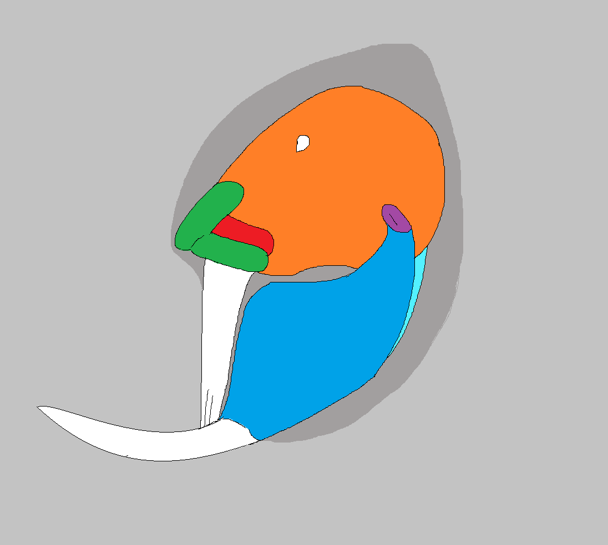
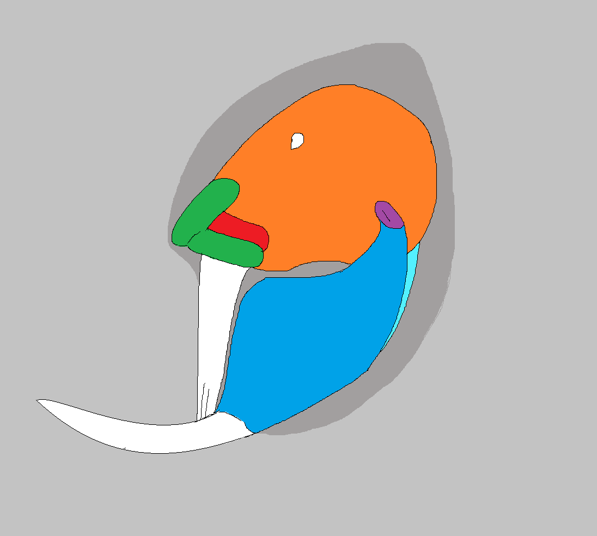

Molodonts of the Early Ultimocene: Part 2
While some molodonts moved from seeds to insects, another clade of budding carnivores switched their diets to the closest thing available in the animal kingdom; molluscs.
Most seed-eating molodonts will take snails when they are available; snails are readily found in trees, small and hard-shelled like seeds, and full of protein. The molodont jaw is as ideally built to crack them as it is to crunch seeds. It is not a surprise therefore that a group of these tribbetheres would early on become mollusc specialists by the middle Pangeacene. As their craving for mollusc meat grew, they left the trees to forage for their prey on the forest floor, where snails are much more abundant in the shade and shelter of logs and leaf litter. But ultimately, it was near water that the most molluscs could be found. And so, over just a few million years, the durophagodonts ("hard-eating teeth") evolved.
The earliest durophagodonts were still very recognizable as molodonts, with basal jaw structures and thick coats of water-repellent fur. Their feet grew webbed, and they swam with their forearms while using a flattened tail primarily to steer, but they were not very derived. A few durophages, such as the spotted snailsmasher, have remained almost unchanged since, living in freshwater or coastal waters across much of southern Serinarcta and still spending considerable time on shore. With a slightly upward-curving lower tooth that serves to hold the shells of snails and bivalves, this platypus-like molodont then grinds through the shell with the blocky upper tooth exactly the way its ancestors crushed nuts, except that it separates out the meat from the shell when the job is done as mollusc shells are largely non-nutritive.
Over a very short time, however, other durophages became increasingly aquatic. External ears, useless underwater, receded into the jaw. Claws shrunk and were lost, losing their role to handle food as the mouth alone became enough; they became flippers, poorly suited to move on land, and some individuals - especially males without offspring to worry about - stopped coming to land at all. The coat of fur that insulated the earliest small species grew thinner from the head backward as insulating body fat now began to serve the purpose hair once did. Now seal-like, these forms spread out globally. No longer restricted to shallow water, by 25 million years ago they had already become deep divers that could pull shellfish off the sea floor - such a resource allowed an incredible population explosion and then one of evolutionary speciation. Merwals, while still successful, began to find their food harder to find at this time.
Forms like these, the molodont's answer to seals, were widely successful and until comparably recently found in all of Serina's oceans and seas. They formed a grade rather than a proper clade, because the evolution of some was extremely rapid, leaving the closest relatives of some conservative-looking species to be much more derived animals. The change happened incredibly quickly; in under five million years some of them became entirely marine. All hair was lost, fingers were fused into fleshy fins, and external ears vanished. They cut all ties to the land, becoming aquatic fish once more.
Over the following ten million years, however, they began to eat themselves to death. Populations rose, then crashed, then rose cyclically as dozens of molluscivorous molodonts stripped the sea of its shelled molluscs, organisms that had adapted over millions of years toward fairly minimal predatory pressure. Today, these seal-like forms with large crushing jaws are far from gone, but they are fewer in number, victims of their own success. Forms that remain, such as the clamcracker, now generally rely on small, fast-maturing sea snails to feed on, while species that fed on slower-growing, larger species have died out.
Merwals began the sharp decline that continues today at the same time as the sea molodonts numbers rose and crashed, unable to adapt to food scarcity by adopting alternative diets. Many durophage molodonts also went extinct late in the Pangeacene as a result of the food scarcity they caused, particularly those species that grew large in response to an early abundance of now-extinct giant clams. Such clams had never evolved to deal with predation, and were rapidly exterminated; their predators, having grown huge to feed on them, could not sustain on anything less and then died out themselves. Yet such exceptions aside, molodonts were much better able to weather these changes of their own doing than the merwals. During periods where mollusc populations were depleted, and merwals starved, some durophages found alternatives. Necessity, they say, is the innovator of invention, and some of the fully marine molodonts began yet another shift in diet toward new food sources to survive. These were the selective pressures that led to the evolution, over the last ten million years, of two particularly specialized molodonts, the reef-eater, and the rakewhale.
The Emperor Reef-eater
The emperor reef-eater, whose name some may contend is overtly descriptive considering it is the only species in its genus, is a mid-sized sea molodont, weighing up to eight hundred pounds. Yet once you see one, you will understand the regal name it holds: it is among the most beautiful of any tribbethere, its smooth and hairless skin decorated in beautiful shades of blue, yellow and pink and splashed with black spots. But its pretty pelage is only part of its notability; moreso, the reef-eater is noteworthy for being an extreme dietary specialist that has survived through periods of mollusc scarcity by adapting to exploit the hardest to eat meat in the entire sea; snail reefs. As bivalves and shelled snail numbers declined in the late Pangeacene, the ancestors of the reef-eater, perhaps out of desperation, turned to chewing on the limestone rock that Serina's coral-like reef-building snails produced to shelter themselves across Serina's sunlit shallow seas. Though by collectively building the reef these molluscs produced a stronger, larger shell than any other, they were not entirely immune to the powerful crushing jaws of these adaptable tribbetheres which soon learned to gnaw at the top of the reef to shatter the stone and suck out the small but incredibly numerous fleshy, defenseless snails that hid deep inside. As soon as the ancestors of the reef-eater learned of this hidden food source, they adapted rapidly to better access it. The upper jaw muscles became absurdly large, forming a bulbous bump on the creatures' snout, powering a veritable anvil of a tooth with enough force to pulverize the solid rock of the reefs to sand to access the snails inside. The result is that the modern reef-eater boasts the strongest bite of any animal ever to evolve - some 600 tons of bite force per square inch measures at the center of the grinding tooth - which is enough to shatter solid stone into dust. It is hard work, and the reef-eater feeds nearly continuously throughout the day for a relatively small overall amount of calories, but the diet is - at least in the short term - reliable; reefs on Serina are immense, covering most coastal shelves, providing a lot of food to those few animals crazy enough to specialize on them.
Grazing twelve or more hours a day on solid rock puts tremendous wear on the reef-eater's teeth, but to compensate they have evolved to grow at the astounding rate of nearly an inch per day, and even then only just break even to maintain their length. In a single year, a reef-eater will crush and digest some five thousand pounds of limestone from the reef and pass it in their waste as a fine white sand that collects on Serina's beaches, like a giant parrotfish. Serina's reefs, as expansive as they currently are, can endure a small amount of reef-eater predation. It remains to be seen, however, whether they can weather the continued assault of this novel predator in conjunction with a cooling climate which will before very long now push their range further and further toward the equator. The reef-eater may well eat this food source out of its existence as its ancestors did the last - and this time, there may be no alternative to move to.
The Rakewhale
The rakewhale is an oxymoron; a durophage molodont which has abandoned a diet of hard food. As molluscs grew scarce, its ancestors dug around in the sediment for whatever else they could find - worms, small crustaceans, even small burrowing fish could be found this way with enough effort. But the molodont mouth, for all it can do, was not at first suited well for this, and so to better sift the sediment these bottom-feeding forms were under a strong selective pressure to evolve wider, flatter teeth. The teeth began to fuse less neatly in development, and over time the jaws moved so that they did not line up closely to grind together, touching only at the very peak of jaw retraction; the individual teeth in the upper jaw plate began to split at the edge of the beak as they grew, forming a rake-like structure that became ideally suited to sift through the sand for hidden prey that the creature could then pull into its mouth with a burst of suction.
Over time this specialized into its modern form; a very wide, flat, comb-like upper tooth swept forward and then back through ocean sediments, pulling hidden invertebrate prey out of the mud and into the mouth, like a broom pushing debris into a dust pan. With this efficient system in place, the rakewhale grew larger and only fairly recently colonized the southern sea from the northern. Today found in all cool, productive waters worldwide, they have become the largest tribbets ever to exist, reaching up to thirty feet in length and 12,000 lbs. They are solitary, coming together only to breed, and nearly blind; frequently feeding below the maximum depths sunlight penetrates, their acute senses of smell and touch guide them in dark, murky waters. To find mates, they produce low-pitched pulses of infrasound which carry long distances under the sea.
With a diet few other animals compete for, which will remain available even as the global climate cools, the rakewhale's immediate future outlook looks bright, even in a changing world. Ultimately, however, it is a very large animal of a specialized anatomy, and its success relies on stability that will eventually give way. The rakewhale, for now, remains a successful specialist. But specialists rarely endure for the long haul, and this has never been more true than in the Ultimocene.
 
